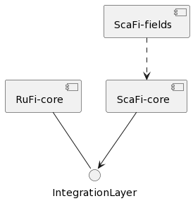
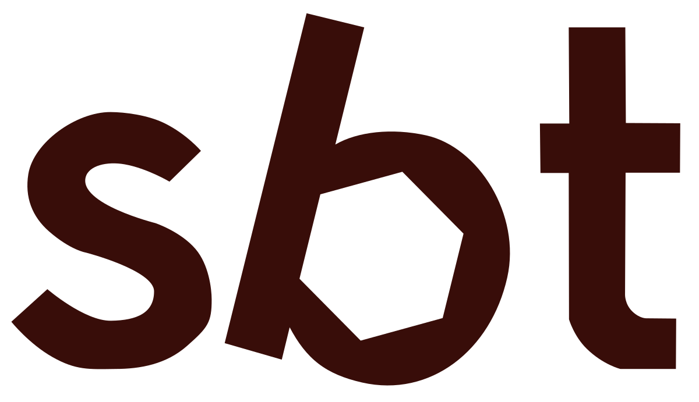
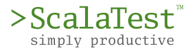
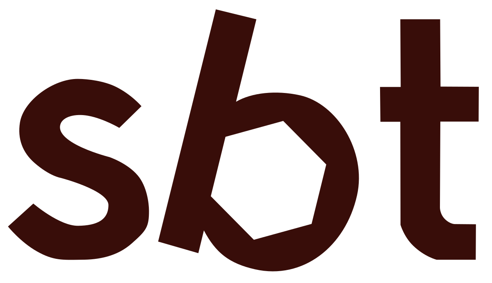
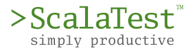
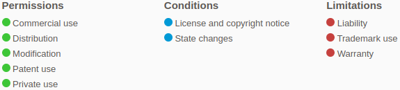

RustFields
Angela Cortecchia - Leonardo Micelli - Paolo Penazzi - Filippo Vissani
Laboratory of Software Systems @ University of Bologna
Introduction
This project was born from the willingness to extend ScaFi: a Scala-based library and framework for Aggregate Programming. The goal of this project is to explore different solutions to make the field calculus available on thin devices.
Development Process
- Agile Methodology & Domain-Driven Design
- Series of knowledge-crunching sessions to kickstart the design
- Split implementation into weekly sprints
Domain Analysis: knowledge crunching
- The first knowledge-crunching sessions were about the main project goals:
- bring aggregate computing on thin devices
- port the ScaFi framework in Scala 3
- Then we focused on highlighting the fundamental concepts of the domain
- We ended up with a ubiquitous language for the domain
Domain Analysis: ubiquitous language
Design
DevOps: repository management
- We created a GitHub organization: RustFields
- Each project has its repository
- The team agreed on working with Git Flow workflow
- Before merging code on the main/master branch, feature branches need to be approved by other team members using the
Pull Requestservice - To favor a linear history we opted to use the
rebasemethod for merging feature branches
DevOps: continuous integration
- The team decided to use the GitHub Actions service for the CI/CD
- All projects have a common workflow called
dispatcher, which is used as a filter to disable the branch builds for some branches - Each project has its specific workflow based on the build systems, languages and targets platform
DevOps: continuous integration
All workflows have the following common jobs after the dispatcher:
Run Tests => Test Release => Release => Success
DevOps: versioning and releasing
- The team adopted the conventional-commit convention
- To ensure that the commits made are conformant to the required pattern, the team used
Git Hooks - Thanks to the use of Semantic Release it was possible to automate all the versioning and releasing work
Tools


 




License
Each project is licensed under Apache License 2.0, which is the original license of ScaFi
